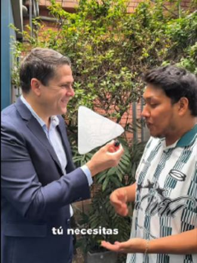
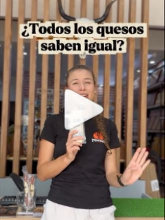
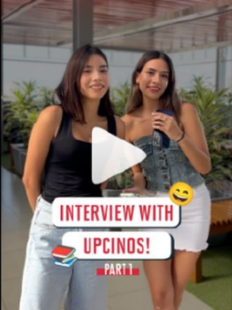
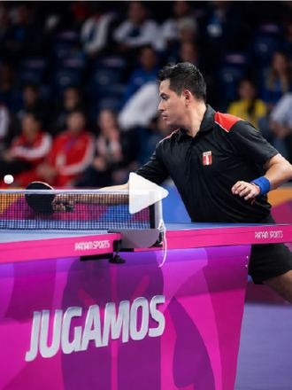
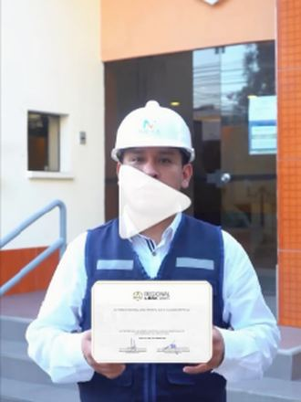
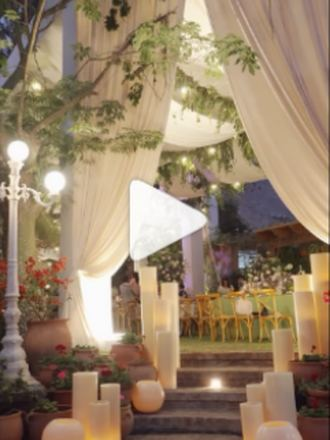

+101K
visualizaciones en un mes, sin pauta
En Eira creamos la estrategia, la identidad y el contenido audiovisual de tu marca según quién eres: marca personal o empresa, B2B o B2C. Crecimiento orgánico, sin plantillas genéricas.
No trabajamos con paquetes cerrados: cada propuesta se arma a la medida de tu marca después de un diagnóstico.
Una marca personal no comunica igual que una empresa, y una empresa B2B no vende igual que una B2C. Por eso empezamos entendiendo tu caso antes de proponer nada.
Redes donde solemos empezar
En qué nos enfocamos
Puedes contratarlos por separado o combinarlos. Después del diagnóstico te recomendamos la mezcla que tu marca realmente necesita.
Marcas que publican sin rumbo o quieren crecer de forma orgánica y constante.
Marcas nuevas o que sienten que su imagen ya no las representa.
Marcas personales, negocios y eventos que necesitan video constante y de calidad.
Marcas que quieren mostrar su producto con caras reales y generar confianza.
Una muestra del contenido que producimos para nuestras marcas.






Resultados reales de las cuentas que gestionamos.
visualizaciones en un mes, sin pauta
seguidores ganados en las cuentas que gestionamos
eventos organizados de principio a fin
Marcas personales, empresas, clínicas, educación, gastronomía, belleza, deporte y entretenimiento.
No publicamos precios fijos porque cada marca es distinta. Cuéntanos tu caso y lo recibimos por WhatsApp para agendar una llamada y enviarte una propuesta a tu medida.
Tu marca
Así entendemos qué tipo de estrategia necesitas.
No. Cada servicio se puede contratar por separado. Después del diagnóstico te recomendamos la combinación que tiene sentido para tu objetivo y tu presupuesto.
El alcance y la interacción suelen empezar a moverse en las primeras semanas. Las ventas y el crecimiento sostenido se construyen con constancia, por eso planificamos en ciclos de al menos 3 meses.
Acceso a tus cuentas, la información de tu marca y una persona de contacto para aprobar contenidos y coordinar grabaciones. Nosotros nos encargamos del resto.
Sí. La estrategia y la edición las trabajamos de forma remota, y coordinamos todo por videollamada y WhatsApp. Las grabaciones presenciales se coordinan según la ubicación.
Agenda un espacio por WhatsApp y conversemos sobre lo que tu marca necesita.